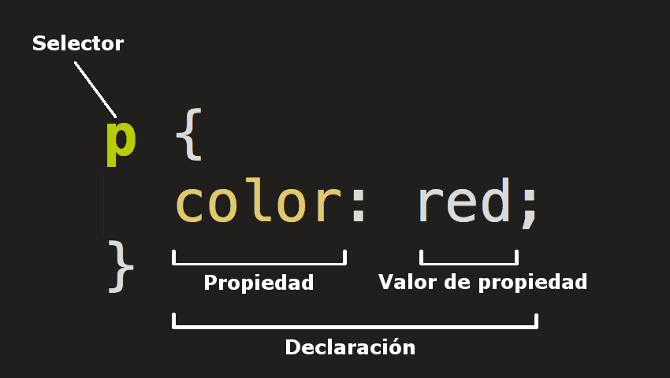

1.1- ¿Qué significa CSS?
Las Hojas de estilo en cascada (del ingles Cascading Stylesheets CSS) es la siguiente tecnología que
aprenderemos después de html.
CSS se usa para darle estilo y posicionarlo visualmente.
1.2- ¿Para qué sirve el CSS? ¿Qué programa se utiliza para interpretar el CSS? (es para 🧠)
CSS se puede usar, por ejemplo, para cambiar la fuente, el color, el tamaño y el espaciado del contenido,
para
multiples columnas, añadir animaciones y otros elementos decorativos. para interpretar el CSS
usamos el navegador.
1.3- ¿A qué se llama regla de CSS?
Las Reglas Condicionales (At-rules) es un módulo de CSS que permite definir un conjunto de reglas que solo aplicarán con base en las capacidades del procesador o del documento al cual la hoja de estilos está siendo aplicada.
1.4- ¿Cuál es la anatomía de la regla de CSS? Agregar imagen explicativa y utilizando una lista descriptiva explicar sus elementos.
Selector: selecciona el(los) elemento(s) a dar estilo (en este caso, los elementos "p" ).
Para dar estilo a un elemento diferente, solo cambia el selector.
Declaración: aplica las propiedades que querés dar al elemento seleccionado en el
Selector. En este caso hay una sola regla, pero puede haber más.
Propiedades: es lo que te permite dar un estilo a un elemento HTML. En el ejemplo la
propiedad es color que le dará color a las letras de los párrafos. Siempre las propiedades se ubicarán a la
izquierda.
Valor de la propiedad: las propiedades deben tener un valor. Cada propiedad tiene valores
definidos. Cada valor se ubicará a la derecha.
1.5- ¿Qué es un selector en CSS?
En CSS los selectores se utilizan para delimitar los elementos HTML de nuestra página web a los que queremos aplicar estilo.
1.6- Identificar y definir los selectores: de ID, de clases, universal, de etiquetas, descendente.
ID: Este tipo de selector es igual al de clase, aunque lo aplicaremos a un único elemento
HTML de nuestra página.
Esto se debe a que el atributo ID de HTML identifica a un elemento HTML por
medio de un nombre.
clase: Los selectores de clases comienzan siempre por un . (punto). Los clientes web (navegadores) identifican este punto y lo distinguen del resto de los selectores.
universal: Nos permite aplicar estilos a todos los elementos HTML de un documento y se indica mediante el *.
etiquetas: Aplicamos propiedades CSS a una etiqueta. La misma se identifica sin utilizar <> .
descendentes: Con este selector seleccionamos un elemento que está dentro de otro del mismo
tipo.
Estos seectores siempre están formados por dos o más selectores separados entre si.
El último
selector será el elemento HTML al que se le aplicará las propiedades de CSS.
1.7- Explicar brevemente utilizando una lista ordenada: ¿cómo funciona el CSS?
- El navegador carga el HTML (por ejemplo, lo recibe de la red).
- Convierte el HTML en un DOM (Modelo de objetos del documento). El DOM representa el documento en la
memoria del ordenador. - Entonces, el navegador va a buscar la mayor parte de los recursos vinculados al documento HTML, como las
imágenes y los videos incrustados... ¡y también el CSS vinculado! - El navegador analiza el CSS y ordena en diferentes «cubos» las diferentes reglas según el tipo de
selector. Por ejemplo, elemento, clase, ID, y así sucesivamente. Para cada tipo de selector que
encuentre, calcula qué reglas deben aplicarse y a qué nodos en el DOM se les aplica el estilo según
corresponda (este paso intermedio se llama árbol de renderización). - El árbol de renderización presenta la estructura en que los nodos deben aparecer después de aplicarle las reglas.
- En la pantalla se muestra el aspecto visual de la página (esta etapa se llama pintura).
1.8- ¿Cuáles son las tres formas para vincular CSS con HTML?
las tres formas para vincular CSS con HTML son: utilizando la etiqueta style, utilizando el atributo style y utilizando un archivo externo
1.9- ¿son iguales? ¿Qué es lo distinto? ¿Qué contribuye al cambio de diseño?
si son iguales los html, lo distinto es el CSS, lo que contribuye el cambio de diseño es el CSS
Abrir los dos archivos CSS de los diseños seleccionados. ¿Son los mismos?
no, no son los mismos
En líneas generales, el mismo HTML ¿puede tener diferentes diseños?
si, puede terner diferentes diseños
| propiedad | descripcion | valores posibles |
|---|---|---|
| color | define el color del texto | verde |
| background-color | Define el color de fondo de un elemento | azul |
| font-size | Define el tamaño de la fuente del texto. | larger, medium, small |
| font-weight | Define el grosor de la fuente del texto (por ejemplo, si se trata de texto en negrita o normal). | 100,200,300 |
| font-style | Define el estilo de la fuente del texto (por ejemplo, si es cursiva o normal). | normal, oblique |
| font-family | Define el tipo de letra a utilizar para el texto | 'Franklin Gothic Medium', 'Arial Narrow', Arial, sans-serif, 'Gill Sans', 'Gill Sans MT', Calibri, 'Trebuchet MS', sans-serif |
| text-align | Define la alineación horizontal del texto (izquierda, centro o derecha) | end, justify,left |
| text-decoration | Define la decoración del texto (por ejemplo, si está subrayado o tachado). | dotted, double, line-through |
| text-transform | Define la transformación del texto (por ejemplo, en mayúsculas o minúsculas). | lowercase, none, uppercase |
| letter-spacing | Define el espacio entre letras. | 0cap, 0ch, ocm |
| line-height | Define la altura de línea del texto. | 0%, 0cap, 0ch |